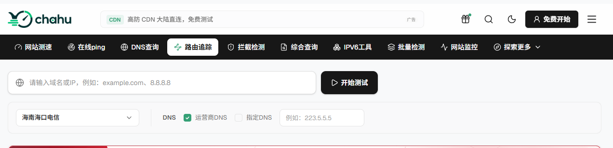

经营海外服务器、跨境电商或外贸网站的站长，几乎都遇到过这种糟心事：后台显示服务器一切正常，海外访问速度飞快，但国内某些省份或特定运营商网络下的用户却频繁反馈“网页打不开”或“连接超时”。
这种典型的“局部或全网连通性异常”，很多时候是因为域名或服务器遭遇了墙的阻断。面对这种情况，盲目重启服务器或更换配置完全解决不了问题。想要快速弄清根源，借助具备全国多节点并发探测能力的在线检测工具，是目前最高效的排查手段。
正常情况下，如果你在不同工具上做并发测试，发现海外节点全绿、国内 HTTP/HTTPS 请求却大量返回连接拒绝或超时，而 Ping 节点又部分可达，这基本就能断定是域名遇到了 SNI/TCP 阻断或 DNS 污染；如果连 ICMP Ping 在国内节点都全红掉包，那大概率是服务器 IP 地址直接被封禁了。
一、 常见的网络问题有哪些？
在直接跑工具之前，有必要先弄懂几种常见的网络阻断类型。很多初学者容易把线路抖动或本地 DNS 解析慢误判为“被墙”，搞清楚它们的表现差异，看检测报告时心里才有底：
DNS 污染： 指网络节点故意返回假的 IP 地址（如解析到 0.0.0.0 或境外无效 IP），导致用户浏览器根本找不到真正的服务器。
TCP / SNI 阻断： 域名能正常解析出正确 IP，网络 ICMP Ping 也是通的，但只要通过 HTTPS 访问网页（发送 SNI 域名信息），连接就会瞬间被切断或强制重置（RST）。这是目前最普遍的拦截方式。
IP 封禁： 目标服务器的特定 IP 被直接列入黑名单，导致该 IP 的所有端口（80、443、Ping 等）在国内网络下均无法连通。无论绑定什么新域名，只要指向该 IP 都会失效。
在线连通性检测平台的核心优势，就是能在几秒钟内调度全国各地电信、联通、移动及海外节点同时发起访问测试，排除个人本地 ISP 故障导致的误判。
二、 热门在线被墙检测工具深度测评与推荐
1. chahu（茶壶测速）
官网： https://www.chahu.com/block
chahu是近年来在运维和站长圈里口碑提升很快的一款网络诊断工具。在连通性排查方面，它的被墙检测功能做得相当扎实。输入域名后，系统会在数秒内调用全国主要省份的并发节点进行检测。
核心亮点：
区分阻断细节： 能清晰分辨是 DNS 解析失败、TCP 握手中断还是 HTTPS/SNI 层面的阻断，避免给出笼统的判断。
全链路可视化： 配合路由跳数、丢包率与延迟展示，方便判断问题出在骨干网出口还是省份局部节点。
综合风险评估： 除了连通性测试，还整合了域名拦截与安全状态排查，适合作为日常排错的第一站。
适用场景：
网站突发连通性排查： 当收到国内局部省份或特定运营商（电信/联通/移动）用户反馈“打不开网站”时，快速定位受影响的具体区域与线路。
精确判定被墙类型： 快速确认域名究竟是遇到了 DNS 污染、TCP/SNI 阻断，还是纯粹的服务器 IP 被封。

2. ITDOG
ITDOC在老站长圈子里比较火，大伙儿用它主要是图它的国内节点又多又密。
核心亮点： 跑完测试后生成的那个“中国地图色块图”非常管用。节点响应正常的省份显绿，卡顿的显示黄色，要是连不上就直接一片红。如果你一跑测试，发现国内地图大面积泛红甚至全红，而切到海外节点看全都是通透的绿，那基本不用猜了，域名九成九是被墙了。
适用场景： 适合用来测全国各地的节点响应，或者看看刚套的 CDN 在不同省份的覆盖和加速效果到底咋样。
3. 拨测
拨测网（Boce）是一套偏企业级运维的综合监控平台，它的被墙查询与污染检测模块使用频率也很高。
核心亮点：它的优势在于节点不仅包揽了常规的三大运营商，连教育网、长城宽带这些小众线路也能覆盖到。另外，如果你手里有一堆域名需要排查，它支持批量导入查询，不用一个个手动输入，效率高出不少。
适用场景： 适合域名交易前的批量风险筛查，以及微信、QQ 拦截状态的同步检测。
4. GreatFire.org
与前面几款侧重“实时连通速度”的工具不同，GreatFire 专注于网络阻断行为的历史数据记录与持续统计。
核心亮点： 可以查看某个域名在过去数月或数年内的被封锁比例趋势。通过对比境内外节点的抓取结果，给出长期封锁判定。
适用场景： 适合用来确认某一域名是否属于被长期定性封锁的特定目标。
5. Ping.pe
官网： https://ping.pe/
由知名海外 VPS 厂商后端团队开发的工具，界面极简但针对性极强。节点均匀分布在北美、欧洲、亚洲等地。
核心亮点： 专门针对指定 IP 或域名的 ICMP/Port 进行连通测试。结果列表中“海外节点全绿（OK）、中国大陆节点全红（Failed）”的对比非常醒目。
适用场景： 当你拿不准究竟是域名被墙，还是刚租用的海外服务器 IP 被封时，用它测最直观。
三、 主流检测平台对比一览
工具名称 | 主要检测类型 | 国内节点覆盖 | 特色优势 |
Chan (茶壶测速) | 域名被墙 / 拦截 / DNS / 路由跳数 | 全面（三大运营商） | 全链路阻断细节剖析，无广告干扰，排错效率高 |
ITDOG | Ping / HTTP / TCP / DNS | 丰富 | 全国地图色块可视化，区域阻断一目了然 |
拨测 (Boce) | 被墙 / 污染 / 微信QQ拦截 | 丰富（含小众ISP） | 支持批量查询，覆盖移动端社交平台拦截排查 |
GreatFire | GFW 封锁历史追踪 | 海外对比节点为主 | 提供长期被封锁历史数据与趋势分析 |
Ping.pe | IP / 端口 / ICMP / MTR | 精选骨干节点 | 极简高效，判断服务器 IP 被封的首选工具 |
四、 确认网站“被墙”后的实用应对策略
如果经过上述工具多方测试，证实网站确实遇到了阻断，可以根据业务实际情况采取应对措施：
彻底排查并清理网站内容： 不少网站被墙的诱因是站点被黑客挂马、篡改，或包含了违规内容。第一时间清查服务器文件与数据库，修复安全漏洞是后续一切修复工作的前提。
更换新域名与 IP 地址： 如果遇到了严重的 DNS 污染或 IP 全局封禁，最直接的解决办法是换用干净的新域名，并更换服务器 IP。如果条件允许，在搜索引擎平台重新报备新域名。
接入国内合规 CDN 或高防节点： 针对部分 SNI 阻断，如果网站具备备案资质，将域名切回国内机房并接入合规 CDN，利用节点的正常解析来过渡，通常能恢复访问。
检查 SSL 证书与标准端口设置： 某些情况下 SNI 拦截是由异常证书或非标端口触发的。使用知名 CA 签发的标准 SSL 证书并走标准的 443 端口，能在一定程度上减少误封风险。
网站连通性异常是运维过程中避不开的难题，但遇到打不开的情况时切忌慌乱猜想。先用Chahu 跑一次节点扫描，快速定位是 DNS 污染、SNI 阻断还是纯粹的 IP 被封；再结合具体的阻断类型采取清理违规内容、更换 IP/域名或接入防护等措施，才是最稳妥的处理路径。建议把常用的检测工具存入浏览器书签，以便在突发网络异常时能第一时间进行诊断。
相关问答
问：用检测工具测出来域名被墙了，这个检测结果准确吗？会不会误判？
答：在线检测工具一般不会误判。这类工具的原理是同时调度国内电信、联通、移动以及海外多个节点发起访问，如果国内节点大面积超时或连接拒绝、海外节点全部正常，基本就能断定是遇到了阻断。不过要注意，偶尔出现单个省份或单个运营商节点异常，有可能是当地网络波动或节点本身问题，建议多换几个工具交叉验证一下再做判断。
问：网站被墙之后，最快能恢复的办法是什么？
答：最快的办法是更换域名和服务器IP。DNS污染或IP封禁这类阻断基本没有申诉通道，等它自动解封也不现实。注册一个新域名，重新解析到新的服务器IP上，做好301跳转把老域名的流量引过来，通常几小时内就能恢复访问。如果网站有备案资质，把域名迁回国内机房接入合规CDN也是一个选择。
问：网站被墙之前有什么征兆吗？能不能提前预防？
答：有几个比较明显的预警信号。比如网站流量突然大幅下滑、某几个省份的用户开始零星反馈打不开、第三方监控平台频繁告警某个区域连通性异常。预防方面，定期用检测工具扫描域名状态，检查服务器有没有被挂马或植入恶意页面，SSL证书及时更新，非标端口尽量改回443，都能降低被误封的概率。
问：检测工具显示只有移动网络下打不开，其他运营商正常，这是被墙吗？
答：这种情况不太像被墙，更像是运营商之间的互联互通问题或者特定线路的路由故障。真正的墙通常覆盖所有运营商，不会只针对某一家。建议用MTR或路由追踪工具看看具体丢包发生在哪个节点，如果是骨干网出口的问题，等运营商自行修复就好，不用急着换域名。
问：用CDN能绕过墙吗？
答：看情况。如果只是域名被SNI阻断，接入Yewsafe这类海外CDN并开启代理模式，把域名解析到CDN的IP上，有一定概率能恢复访问。但如果是IP被封，CDN也救不了，源站IP暴露的话照样被墙。另外，如果网站面向国内用户为主，最稳妥的办法还是备案后迁回国内机房。